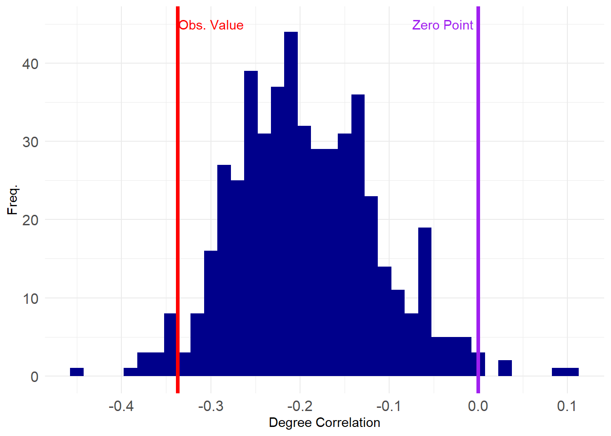
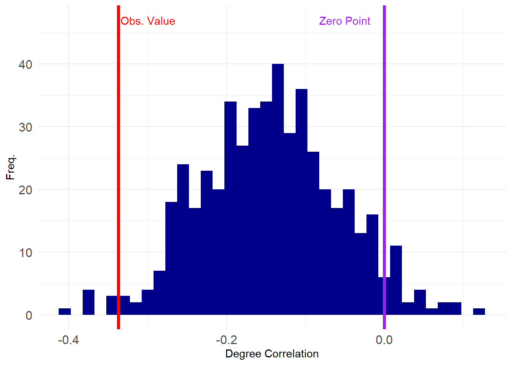
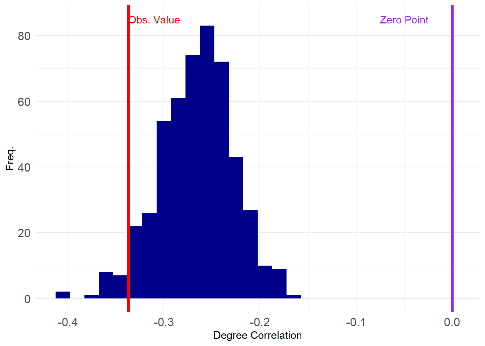
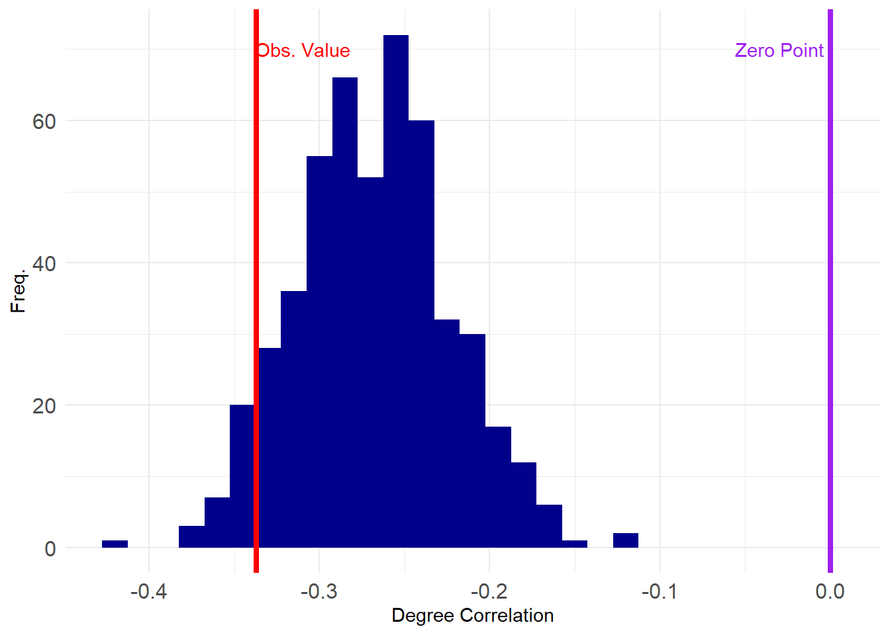

Graph Ensembles in Two-Mode Networks
As we saw in the graph ensemble lesson, there are many approaches to randomizing the structure of one-mode networks when the aim is to create graph ensembles preserving selected properties. These ensembles, in turn, can be used to do null hypothesis testing in networks.
Not surprisingly, a similar suite of techniques exist for the two-mode case, but until recently various approaches were scattered (and reduplicated) across a bunch of literatures in social network analysis, ecology, network physics, and computer science (Neal et al. 2024).
1 Two-Mode Erdos-Renyi Model
Like with one-mode networks, the simplest null model for two-mode networks is one that preserves the number of nodes and the number of edges. This model, like we saw in the one-mode network case, also preserves anything that is a function of these two-quantities. In the two-mode case, this is the bipartite graph’s density and the average degrees of the nodes in each mode (recall that two-mode networks have two average degrees). This is thus a two-mode version of the Erdos-Renyi null model.
Let’s load up the Southern Women (SW) data and see how it works:
Let’s compute some basic two-mode network statistics:
Code
[1] 0.3531746[1] 4.944444[1] 6.357143We can see that the density of the SW network is \(d=\) 0.35, the average degree of people \(\bar{k_p}=\) 4.94 and the average degree of groups \(\bar{k_g}=\) 6.36.
Now, let’s compute something on this network, like the degree correlation between people and groups, answering the question: Do people with lots of memberships tend to join larger groups?
We already know the answer to this question for the SW data from the two-mode network analysis lecture notes, which is negative. In this network people with a lot of memberships connect to smaller groups.
Here’s a version of that function that takes the biadjacency matrix as input, creates the bipartite matrix from it and returns the two-mode degree correlation:
Code
tm.deg.corr <- function(x) {
B <- rbind(
cbind(matrix(0, nrow = nrow(x), ncol = nrow(x)), x),
cbind(t(x), matrix(0, nrow = ncol(x), ncol = ncol(x)))
) # creating bipartite matrix
d <- data.frame(
e = as.vector(B),
rd = rep(rowSums(B), ncol(B)),
cd = rep(colSums(B), each = nrow(B))
)
return(cor(d[d$e == 1, ]$rd, d[d$e == 1, ]$cd))
}Which is the same number we got before.
Now let’s see how we can generate an Erdos-Renyi two-mode network with a specified number of edges. A simple approach goes like this:
First, let’s create a vectorized version of the adjacency matrix:
[1] 1 1 0 1 0 0 0 0 0 0 0 0 0 0 0 0 0 0 1 1 1 0 0 0 0 0 0 0 0 0 0 0 0 0 0 0 1
[38] 1 1 1 1 1 0 0 0 0 0 0 0 0 0 0 0 0 1 0 1 1 1 0 0 0 0 0 0 0 0 0 0 0 0 0 1 1
[75] 1 1 1 1 1 0 1 0 0 0 0 0 0 0 0 0 1 1 1 1 0 1 1 1 0 0 0 0 0 1 0 0 0 0 0 1 1
[112] 1 1 0 1 0 1 1 0 0 1 1 1 0 0 0 1 1 1 1 0 1 1 1 1 1 1 1 1 0 1 1 0 0 1 0 1 0
[149] 0 0 0 1 1 1 1 1 1 1 0 1 1 1 0 0 0 0 0 0 0 0 0 0 1 1 1 1 1 0 0 0 0 0 0 0 0
[186] 0 0 0 0 0 0 0 0 1 1 0 1 1 0 0 0 0 0 0 0 0 0 1 1 1 1 1 1 0 0 0 0 0 0 0 0 0
[223] 0 0 0 0 0 1 1 1 0 0 0 0 0 0 0 0 0 0 0 0 0 0 0 1 1 1 0 0 0 0These are just the biadjacency matrix entries stretched out into a long vector of length equal to the number of rows multiplied by the number of columns of the matrix (18 \(\times\) 14 \(=\) 252).
Then we just reshuffle the values of this vector by reassigning vector positions across the entire length of the vector at random:
Now we can just generate a new biadjacency matrix A.perm from the reshuffled vector v.shuff:
Code
6/27 3/2 4/12 9/26 2/25 5/19 3/15 9/16 4/8 6/10 2/23 4/7 11/21 8/3
EVELYN 0 1 0 1 1 0 0 0 1 0 0 1 0 0
LAURA 0 1 0 1 0 0 1 0 0 0 0 0 0 0
THERESA 1 0 0 1 0 1 0 1 0 1 0 0 1 0
BRENDA 1 0 1 0 1 0 1 1 1 1 0 1 0 1
CHARLOTTE 0 0 0 0 1 1 1 1 0 0 1 0 1 0
FRANCES 1 0 0 1 1 1 1 0 1 0 1 1 0 0
ELEANOR 0 0 0 0 0 0 0 0 0 0 0 1 0 0
PEARL 0 0 0 1 1 0 1 0 0 1 1 0 0 0
RUTH 0 0 0 0 0 1 1 0 0 0 1 0 0 0
VERNE 1 1 0 0 0 0 0 0 1 1 1 1 0 0
MYRNA 0 1 0 0 1 1 1 1 0 0 0 0 0 0
KATHERINE 0 1 0 0 0 0 1 0 0 0 1 1 0 0
SYLVIA 0 1 0 0 1 0 0 1 1 0 1 1 0 1
NORA 1 0 0 1 1 1 0 1 1 0 1 0 0 0
HELEN 0 0 0 0 0 1 1 0 0 1 0 0 0 0
DOROTHY 0 0 0 1 1 1 1 1 1 0 0 0 0 0
OLIVIA 0 0 0 0 0 0 0 1 0 1 0 1 0 0
FLORA 0 0 0 1 0 0 0 0 0 0 0 1 0 0We can verify that A.perm has the same basic network statistics as A:
Code
[1] 0.3531746[1] 4.944444[1] 6.357143But not the same degree distributions:
EVELYN LAURA THERESA BRENDA CHARLOTTE FRANCES ELEANOR PEARL
8 7 8 7 4 4 4 3
RUTH VERNE MYRNA KATHERINE SYLVIA NORA HELEN DOROTHY
4 4 4 6 7 8 5 2
OLIVIA FLORA
2 2 EVELYN LAURA THERESA BRENDA CHARLOTTE FRANCES ELEANOR PEARL
5 3 6 9 6 8 1 5
RUTH VERNE MYRNA KATHERINE SYLVIA NORA HELEN DOROTHY
3 6 5 4 7 7 3 6
OLIVIA FLORA
3 2 6/27 3/2 4/12 9/26 2/25 5/19 3/15 9/16 4/8 6/10 2/23 4/7 11/21
3 3 6 4 8 8 10 14 12 5 4 6 3
8/3
3 6/27 3/2 4/12 9/26 2/25 5/19 3/15 9/16 4/8 6/10 2/23 4/7 11/21
5 6 1 8 9 8 10 8 7 6 8 9 2
8/3
2 We can now package the two-mode permutation steps into a function called tm.perm:
And generate a 500 strong two-mode Erdos-Renyi graph ensemble for the SW data:
We can now sapply the tm.deg.corr function from before across our ensemble to get 500 degree correlations:
[1] -0.344356903 -0.134295344 -0.133596070 -0.267644558 -0.171674275
[6] -0.275663672 -0.283254133 -0.193806406 -0.337994690 -0.212437024
[11] -0.257590223 -0.118158698 -0.242565641 -0.166337214 -0.173132238
[16] -0.274868693 -0.217969624 -0.216451292 -0.291344341 -0.283195324
[21] -0.207689408 -0.248837917 -0.198871612 -0.240695741 -0.221265615
[26] -0.185705284 -0.289478802 -0.159541270 -0.171820823 -0.186560960
[31] -0.215368270 -0.254480771 -0.177874085 -0.151141815 -0.289125269
[36] -0.224790425 -0.201960650 -0.270071352 -0.116296228 -0.185726631
[41] -0.303763988 -0.259510523 -0.218542183 -0.112107029 -0.243725759
[46] -0.005737813 -0.198127012 -0.229914646 -0.204889016 -0.079508887
[51] 0.027440505 -0.202949007 -0.218607373 -0.025492884 -0.133046441
[56] -0.160869565 -0.185500601 -0.213562420 -0.155718555 -0.250021152
[61] -0.053023663 -0.137790380 -0.236702431 -0.248327843 -0.131984233
[66] -0.205270847 -0.198270225 -0.235000000 -0.286357283 -0.144811901
[71] -0.294190720 -0.203126837 -0.116331339 -0.253407599 -0.191774271
[76] -0.145264282 -0.202891718 -0.184967788 -0.141816921 -0.149469250
[81] -0.218688180 -0.218279156 -0.012786560 -0.197629515 -0.148183895
[86] -0.138678154 -0.277539621 -0.266943121 -0.304491726 -0.118560460
[91] -0.129700324 0.004097715 -0.252852092 -0.239662227 -0.264175504
[96] -0.219322074 -0.201478868 -0.206365547 -0.296350444 -0.136214570So let’s see how our observed value stacks up in the grand scheme:
Code
library(ggplot2)
p <- ggplot(data = data.frame(round(corrs, 2)), aes(x = corrs))
p <- p + geom_histogram(binwidth = 0.015, stat = "bin", fill = "darkblue")
p <- p + geom_vline(
xintercept = tm.deg.corr(A),
color = "red", linetype = 1, linewidth = 1.5
)
p <- p + geom_vline(
xintercept = 0, linetype = 1,
color = "purple", linewidth = 1.5
)
p <- p + theme_minimal() + labs(x = "Degree Correlation", y = "Freq.")
p <- p + theme(axis.text = element_text(size = 12))
p <- p + annotate("text", x = -0.04, y = 45, label = "Zero Point", color = "purple")
p <- p + annotate("text", x = -0.3, y = 45, label = "Obs. Value", color = "red")
p
It looks like our observed value is close to the tail end of the negative spectrum, suggesting it is statistically improbable to have been obvserved by chance. We can compute the value that corresponds to the 1st percentile of the assortativity distribution from the ensemble and then see if what observe is below that value (\(p < 0.01\)).
1%
-0.3587599 1%
FALSE Whoops. Looks like the observed value is not extreme enough using a \(p <0.01\) criterion of statistical significance. Let’s try a less stringent one:
5%
-0.3141873 5%
TRUE Aha! A test of the hypothesis that the observed value is smaller than the value at the 95th percentile of the distribution of values in this null graph ensemble returns a positive answer, suggesting that degree anti-correlation is present in the SW data, at statistically significant levels, net of density.
As before, if we wanted a more stringent two-tailed test we would need to create a vector with the absolute value of the two-mode degree correlation:
Which is still statistically significant at conventional levels (\(p <0.05\)).
2 Fixed Degree Models
As we already noted, the two-mode Erdos-Renyi model fixes the number of edges (and thus the density and average degrees) in the network, but does not preserve the original degree distributions. We might want to test our hypotheses by using a two-mode graph ensemble that “controls for” the node degrees.
How do we do that? One complication is that we have two sets of degrees so we have more options than in the one mode case. We can fix the row (person) degree, or the column (group) degree or both degrees.
Let’s begin with the simplest case, in which we fix either the row or column degree but not both.
2.1 Fixing Row Degrees
To fix the row degrees, we need to randomize the entries in each row of the biadjacency matrix, while preserving the number of ones in that row. One way to do this is to write a function that takes an observed row of the matrix, randomizes it and then substitutes it for the observed row:
Now we can just apply the rand.row function to each row of the biadjacency matrix A to generate a new matrix A.r:
Here’s the original matrix A:
6/27 3/2 4/12 9/26 2/25 5/19 3/15 9/16 4/8 6/10 2/23 4/7 11/21 8/3
EVELYN 1 1 1 1 1 1 0 1 1 0 0 0 0 0
LAURA 1 1 1 0 1 1 1 1 0 0 0 0 0 0
THERESA 0 1 1 1 1 1 1 1 1 0 0 0 0 0
BRENDA 1 0 1 1 1 1 1 1 0 0 0 0 0 0
CHARLOTTE 0 0 1 1 1 0 1 0 0 0 0 0 0 0
FRANCES 0 0 1 0 1 1 0 1 0 0 0 0 0 0
ELEANOR 0 0 0 0 1 1 1 1 0 0 0 0 0 0
PEARL 0 0 0 0 0 1 0 1 1 0 0 0 0 0
RUTH 0 0 0 0 1 0 1 1 1 0 0 0 0 0
VERNE 0 0 0 0 0 0 1 1 1 0 0 1 0 0
MYRNA 0 0 0 0 0 0 0 1 1 1 0 1 0 0
KATHERINE 0 0 0 0 0 0 0 1 1 1 0 1 1 1
SYLVIA 0 0 0 0 0 0 1 1 1 1 0 1 1 1
NORA 0 0 0 0 0 1 1 0 1 1 1 1 1 1
HELEN 0 0 0 0 0 0 1 1 0 1 1 1 0 0
DOROTHY 0 0 0 0 0 0 0 1 1 0 0 0 0 0
OLIVIA 0 0 0 0 0 0 0 0 1 0 1 0 0 0
FLORA 0 0 0 0 0 0 0 0 1 0 1 0 0 0And the reshuffled matrix A.r
6/27 3/2 4/12 9/26 2/25 5/19 3/15 9/16 4/8 6/10 2/23 4/7 11/21 8/3
EVELYN 1 0 0 1 0 1 1 1 1 0 1 0 0 1
LAURA 0 0 1 1 1 0 0 0 1 0 1 1 0 1
THERESA 1 0 1 0 0 1 0 1 1 0 1 1 0 1
BRENDA 0 1 1 0 1 0 1 0 0 1 0 0 1 1
CHARLOTTE 0 0 1 0 0 0 0 0 1 1 1 0 0 0
FRANCES 0 1 0 1 0 0 1 1 0 0 0 0 0 0
ELEANOR 0 0 0 0 0 0 1 0 0 1 1 0 0 1
PEARL 0 0 0 0 1 0 0 0 1 1 0 0 0 0
RUTH 0 0 0 0 0 1 0 1 0 1 0 0 0 1
VERNE 0 0 0 0 1 1 0 1 0 0 0 0 1 0
MYRNA 1 1 0 0 0 0 1 1 0 0 0 0 0 0
KATHERINE 0 1 1 0 0 1 0 0 0 0 1 0 1 1
SYLVIA 1 0 0 0 1 0 0 1 1 1 1 0 0 1
NORA 1 1 0 1 1 1 0 1 0 1 0 0 1 0
HELEN 0 0 1 0 1 1 0 0 0 1 0 0 0 1
DOROTHY 1 0 0 0 0 0 0 0 0 1 0 0 0 0
OLIVIA 0 1 0 0 0 0 0 0 0 1 0 0 0 0
FLORA 0 0 0 0 0 0 0 0 0 0 0 1 0 1Note that the new matrix A.r preserves the person degrees of the original:
EVELYN LAURA THERESA BRENDA CHARLOTTE FRANCES ELEANOR PEARL
8 7 8 7 4 4 4 3
RUTH VERNE MYRNA KATHERINE SYLVIA NORA HELEN DOROTHY
4 4 4 6 7 8 5 2
OLIVIA FLORA
2 2 EVELYN LAURA THERESA BRENDA CHARLOTTE FRANCES ELEANOR PEARL
8 7 8 7 4 4 4 3
RUTH VERNE MYRNA KATHERINE SYLVIA NORA HELEN DOROTHY
4 4 4 6 7 8 5 2
OLIVIA FLORA
2 2 But not the group degrees, because each person’s memberships are randomly distributed across groups:
6/27 3/2 4/12 9/26 2/25 5/19 3/15 9/16 4/8 6/10 2/23 4/7 11/21
3 3 6 4 8 8 10 14 12 5 4 6 3
8/3
3 6/27 3/2 4/12 9/26 2/25 5/19 3/15 9/16 4/8 6/10 2/23 4/7 11/21
6 6 6 4 7 7 5 8 6 10 7 3 4
8/3
10 All the other lower order statistics like density are preserved:
Now we package everything into a function:
We then generate a graph ensemble of reshuffled matrices that preserve the person degrees, and compute our degree correlations in that set of networks:
Let’s compute the degree correlations across this ensemble and see how our observed value stacks up in the grand scheme:

Looking pretty good! Let’s check the p-value:
5%
-0.2756015 5%
TRUE [1] 0.016Neat! Our result can continue to be defended at the \(p < 0.05\) level. Still a chance of getting published.
2.2 Fixing Column Degrees
We can fix the column degrees using the same fix.deg function as earlier, but this time, we just change the mode argument to equal 2, to apply the function to the columns and not the rows of the matrix A.
For instance:
6/27 3/2 4/12 9/26 2/25 5/19 3/15 9/16 4/8 6/10 2/23 4/7 11/21 8/3
EVELYN 0 1 0 1 1 1 1 0 1 0 1 1 0 0
LAURA 0 0 1 0 0 0 1 1 1 0 0 0 0 0
THERESA 0 1 0 1 1 0 0 1 1 1 0 0 0 0
BRENDA 0 0 1 0 0 1 0 1 0 0 1 1 1 0
CHARLOTTE 0 0 0 0 0 1 0 1 1 0 0 0 0 0
FRANCES 0 1 0 0 1 0 1 1 1 1 0 0 1 0
ELEANOR 0 0 0 0 0 0 1 0 0 1 1 0 0 0
PEARL 0 0 0 0 0 0 0 0 1 1 0 0 0 0
RUTH 0 0 0 0 1 0 0 1 1 0 0 0 0 0
VERNE 1 0 1 0 1 1 1 1 1 0 0 1 0 1
MYRNA 0 0 1 0 1 1 1 1 0 0 0 0 0 0
KATHERINE 1 0 0 1 0 0 1 1 1 0 0 1 1 0
SYLVIA 0 0 0 0 1 0 1 1 1 1 0 0 0 0
NORA 1 0 1 0 1 0 1 1 0 0 0 0 0 0
HELEN 0 0 0 0 0 1 0 1 1 0 0 1 0 1
DOROTHY 0 0 0 0 0 1 0 0 0 0 1 0 0 0
OLIVIA 0 0 0 0 0 1 1 1 1 0 0 0 0 0
FLORA 0 0 1 1 0 0 0 1 0 0 0 1 0 1Which generates a reshuffled adjacency matrix that preserves the group degrees:
6/27 3/2 4/12 9/26 2/25 5/19 3/15 9/16 4/8 6/10 2/23 4/7 11/21
3 3 6 4 8 8 10 14 12 5 4 6 3
8/3
3 6/27 3/2 4/12 9/26 2/25 5/19 3/15 9/16 4/8 6/10 2/23 4/7 11/21
3 3 6 4 8 8 10 14 12 5 4 6 3
8/3
3 But not the person degrees:
EVELYN LAURA THERESA BRENDA CHARLOTTE FRANCES ELEANOR PEARL
8 7 8 7 4 4 4 3
RUTH VERNE MYRNA KATHERINE SYLVIA NORA HELEN DOROTHY
4 4 4 6 7 8 5 2
OLIVIA FLORA
2 2 EVELYN LAURA THERESA BRENDA CHARLOTTE FRANCES ELEANOR PEARL
8 4 6 6 3 7 3 2
RUTH VERNE MYRNA KATHERINE SYLVIA NORA HELEN DOROTHY
3 9 5 7 5 5 5 2
OLIVIA FLORA
4 5 And now we test our hypothesis that there is degree anti-correlation in the SW data on an ensemble of graphs with fixed group degrees:
Let’s see how things look:

Uh oh, adjusting for group degrees seems to have made our conclusions a bit more shaky. All of the estimated degree correlations are negative (below zero) and our observed value does not seem to be as extreme as before.
Let’ see what the p-values say:
5%
-0.3316684 5%
TRUE [1] 0.036Still significant at \(p < 0.05\)!
Regardless, it is clear that our earlier conclusions from the Erdos-Renyi model were a bit too optimistic. What happens when we try to fix both the row and column degrees?
2.3 Fixing Row and Column Degrees
To fix row and column degrees, we play a swapping game. At each round, we select two random persons \(a\) and \(b\). Each person collects their memberships and calculates the memberships they have that the other person does not have (and vice versa). Thus, \(a\) has a set of memberships that \(b\) does not have, and \(b\) has a set of memberships that \(a\) does not have. Then they trade memberships \(n\) times where \(n\) is a number between zero and the minimum of the size of the two sets of memberships that the other person does not have. We repeat this trading game for \(k\) number of times.
Below is a function called make.swap that implements this algorithm, called “curveball” (Neal et al. 2024). The function takes the biadjacency matrix as input and repeats the swapping process described above 100 times:
Code
make.swap <- function(x, k = 100) {
z <- 1 # initializing counter
while (z <= k) {
n <- sample(rownames(x), 2) # sampling two people at random
a <- n[1] # person a
b <- n[2] # person b
a.m <- names(which(x[a, ] == 1)) # person a's memberships
b.m <- names(which(x[b, ] == 1)) # person b's memberships
ab <- setdiff(a.m, b.m) # memberships that a has that b does not
ba <- setdiff(b.m, a.m) # memberships that b has that a does not
w <- sample(0:min(length(ab), length(ba)), size = 1) # number of rounds of trade
if (w > 0) {
for (i in 1:w) {
ab.m <- sample(ab, 1) # membership that a will transfer to b
ba.m <- sample(ba, 1) # membership that b will transfer to a
x[a, ab.m] <- 0 # a loses membership
x[b, ab.m] <- 1 # b gains membership
x[b, ba.m] <- 0 # b loses membership
x[a, ba.m] <- 1 # a gains membership
a.m <- names(which(x[a, ] == 1)) # updating a's memberships
b.m <- names(which(x[b, ] == 1)) # updating b's memberships
ab <- setdiff(a.m, b.m) # updating differences between a and b's memberships
ba <- setdiff(b.m, a.m) # updating differences between b and a's memberships
}
}
z <- z + 1 # incrementing counter
}
return(x)
}Here’s an example:
6/27 3/2 4/12 9/26 2/25 5/19 3/15 9/16 4/8 6/10 2/23 4/7 11/21 8/3
EVELYN 0 0 1 0 0 0 1 1 1 0 1 1 1 1
LAURA 0 1 1 0 1 1 0 1 1 0 0 1 0 0
THERESA 1 0 0 1 0 1 1 1 1 1 0 0 1 0
BRENDA 0 0 1 0 0 1 1 1 1 1 1 0 0 0
CHARLOTTE 0 1 0 0 0 0 1 1 0 0 0 0 0 1
FRANCES 0 0 1 0 1 1 0 0 1 0 0 0 0 0
ELEANOR 0 0 0 0 1 0 1 1 1 0 0 0 0 0
PEARL 0 0 0 0 0 0 1 0 1 0 0 1 0 0
RUTH 0 0 0 1 1 0 1 1 0 0 0 0 0 0
VERNE 1 0 0 0 0 0 0 1 0 0 0 1 0 1
MYRNA 0 0 0 0 0 1 1 1 0 1 0 0 0 0
KATHERINE 0 0 1 1 0 1 1 1 1 0 0 0 0 0
SYLVIA 0 1 1 0 1 1 0 0 1 0 1 0 1 0
NORA 1 0 0 1 1 0 1 1 1 1 0 1 0 0
HELEN 0 0 0 0 1 0 0 1 1 1 0 1 0 0
DOROTHY 0 0 0 0 1 0 0 0 1 0 0 0 0 0
OLIVIA 0 0 0 0 0 0 0 1 0 0 1 0 0 0
FLORA 0 0 0 0 0 1 0 1 0 0 0 0 0 0We can see that while the specific entries of the swapped biadjacency matrix A.s are different from those of the original matrix A both the row and column degrees are preserved:
EVELYN LAURA THERESA BRENDA CHARLOTTE FRANCES ELEANOR PEARL
8 7 8 7 4 4 4 3
RUTH VERNE MYRNA KATHERINE SYLVIA NORA HELEN DOROTHY
4 4 4 6 7 8 5 2
OLIVIA FLORA
2 2 EVELYN LAURA THERESA BRENDA CHARLOTTE FRANCES ELEANOR PEARL
8 7 8 7 4 4 4 3
RUTH VERNE MYRNA KATHERINE SYLVIA NORA HELEN DOROTHY
4 4 4 6 7 8 5 2
OLIVIA FLORA
2 2 6/27 3/2 4/12 9/26 2/25 5/19 3/15 9/16 4/8 6/10 2/23 4/7 11/21
3 3 6 4 8 8 10 14 12 5 4 6 3
8/3
3 6/27 3/2 4/12 9/26 2/25 5/19 3/15 9/16 4/8 6/10 2/23 4/7 11/21
3 3 6 4 8 8 10 14 12 5 4 6 3
8/3
3 And now we create our graph ensemble with fixed row and column degrees, and test our degree anti-correlation hypothesis:
Plotting the results gives us:

Like before, all of the estimated degree correlations are below zero, and also like before, the observed value does not look as extreme as with the Erdos-Renyi or fixed degree model for either rows or columns separately.
Let’s check the p-value at \(p < 0.05\):
5%
-0.3425058 5%
FALSE No longer significant! What’s the actual p-value?
As suspected, the two-tailed test indicates that the hypothesis of degree anti-correlation is no longer justified in these data even using a criterion of \(p < 0.05\).
Looks like our paper won’t be published after all :(